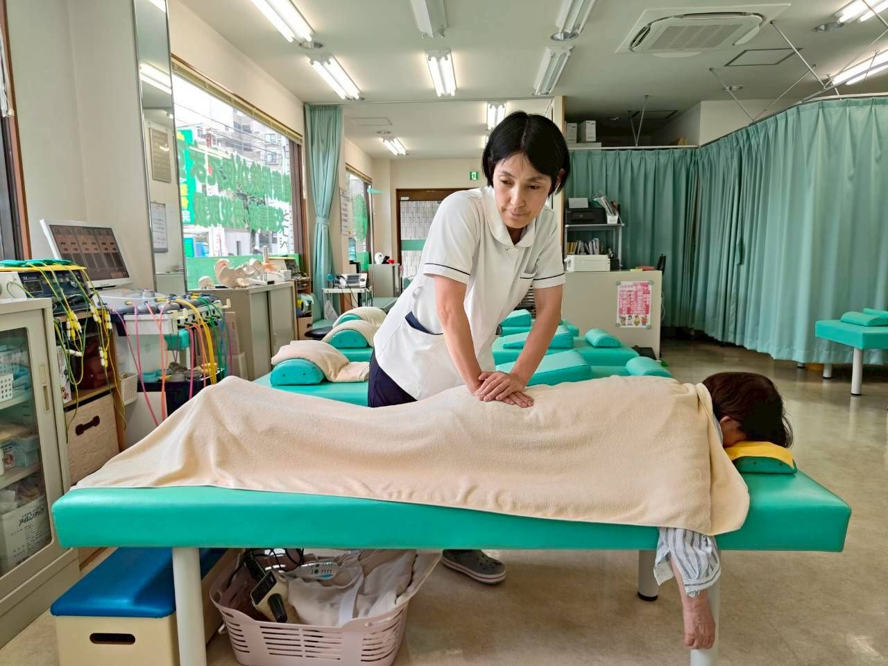
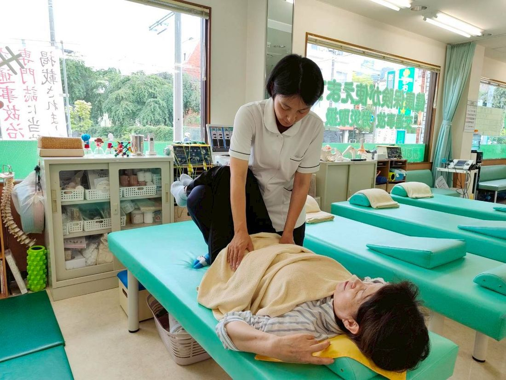
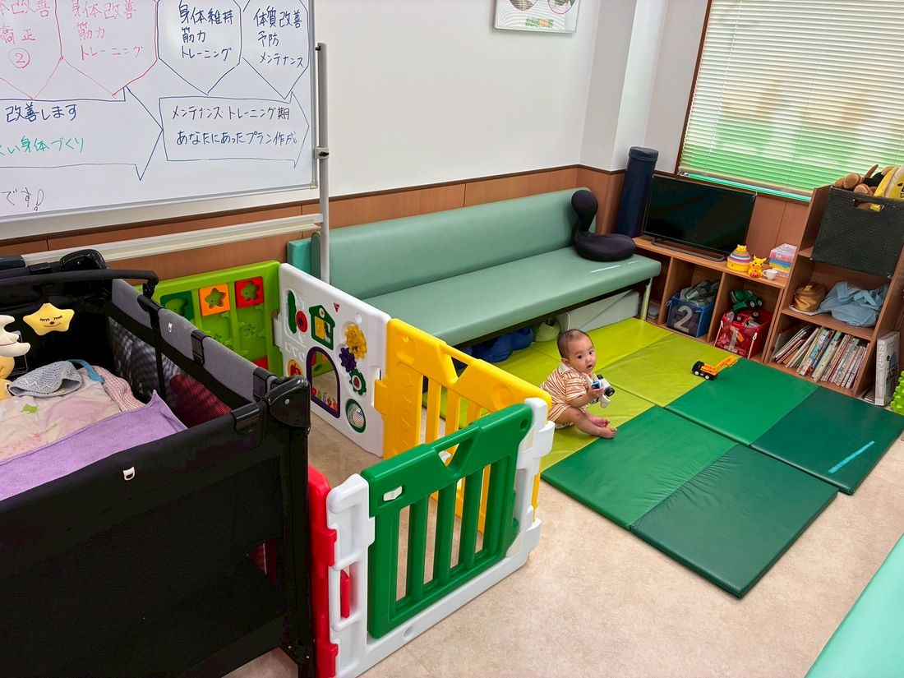
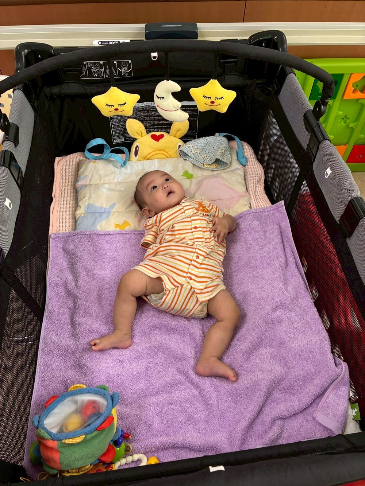
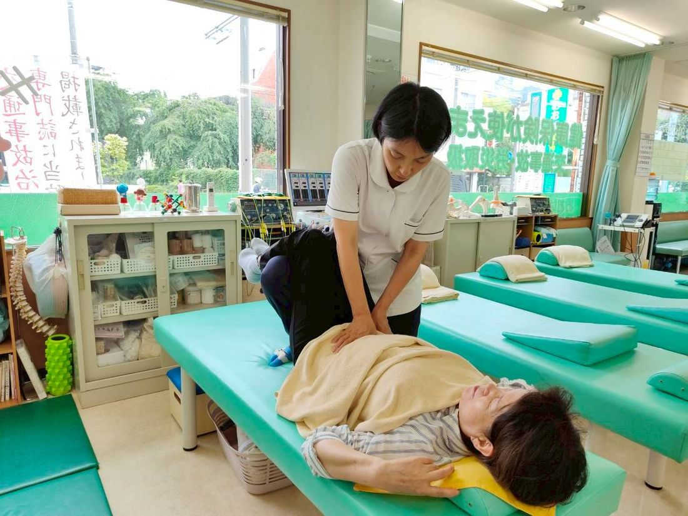
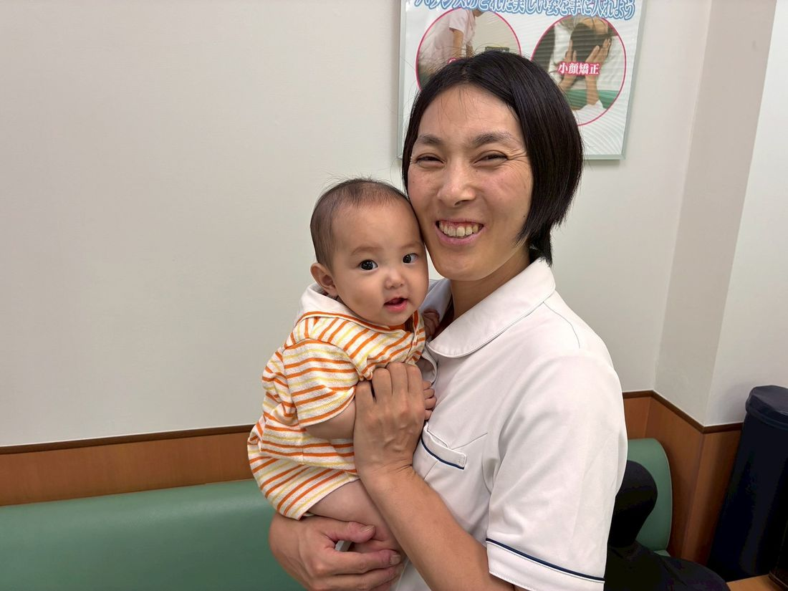
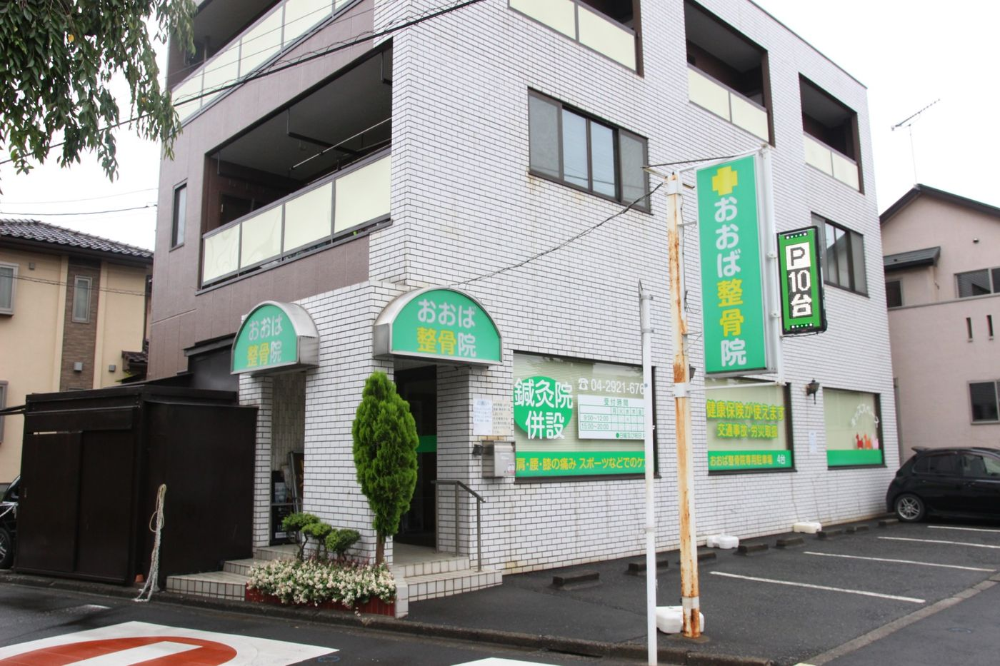

おおば整骨院・整体院の産後骨盤矯正は、女性施術者が担当。
からだにやさしい手技だから、
産後のデリケートな身体でも、安心してお受けいただけます。

LINEでのご予約は、かんたん2ステップ
担当より、ご予約日時のご案内を返信いたします。
ひとつでも当てはまったら、
それはがんばりが足りないせいではなく、
出産で変化した骨盤からのサインです。
産後の骨盤のゆがみは、時間が経つほど身体になじんで戻りにくくなると言われています。
骨盤がゆがんだままだと姿勢がくずれ、抱っこや授乳での腰・肩への負担がかかりやすくなります。
出産でゆるんだ骨盤底筋やインナーマッスルは、意識してケアしないと働きが戻りにくく、尿もれにつながることもあると言われています。
開いた骨盤のままだと、「産前の体型に戻りにくい」と感じる方も少なくありません。
身体の不調や重だるさが続くと、育児の疲れも取れにくく感じられることがあります。
妊娠・出産のとき、赤ちゃんが産道を通れるように骨盤は大きく広がります。このとき同時に、骨盤の底で内臓を支えている「骨盤底筋」という筋肉も引き伸ばされ、ゆるんでしまいます。
つまり、産後の腰まわりの重だるさも、「ズボンが入らない」のも、根っこにあるのは同じ。骨盤のゆがみと、それを支える筋肉のゆるみです。
だからこそ、マッサージで一時的にほぐすだけではなかなか変わりません。骨盤そのものを整え、支える筋肉にアプローチすること。それが産後の身体のケアで大切にしたいポイントです。
産後2ヶ月頃から受けられる、からだにやさしい骨盤矯正です。
おひとりおひとりの状態に合わせ、手技でやさしく、ゆっくりと骨盤を整えていく施術です。産後のデリケートな身体でも安心してお受けいただけます。
整えた骨盤を支えるために、寝たまま受けられる複合高周波EMS「楽トレ」でインナーマッスルと骨盤底筋にアプローチ。ゆるんだ骨盤まわりを支える力を、無理なく整えていきます。
初回に骨盤の状態を丁寧にチェックし、お身体と生活リズムに合わせた通院計画をご提案します。わからないことはその場で何でも聞けるので、不安なまま通い続けることはありません。
骨盤を整えるケアで、産前の自分に一歩ずつ近づいていく。鏡を見るのが楽しみに。
「つらいから抱っこが大変」から「もっと抱きしめたい」へ。育児の時間を心から楽しめるように。
支える筋肉を整えることで、日々の動作がスムーズに感じられることを目指します。
身体が軽く感じられると、心にも余裕が。がんばるママ自身の毎日のために。
※効果や感じ方には個人差があります。
まずは初回お試しで、
ご自身の骨盤の状態を知ることから。
「行ってみたいけれど迷っている」という方は、
まずはお気軽にご相談ください。
当院には女性の施術者が在籍しており、産後骨盤矯正は基本的に女性施術者が担当します。骨盤まわりのお悩みなど、男性には話しにくいことも気兼ねなくご相談ください。実際に、当院の患者様の70%以上が女性。明るく清潔な院内で、女性が通いやすい環境を整えています。

「子どもを預けられないから通えない」という心配は要りません。キッズスペースにはベビーベッドも設置。院内はベビーカーのまま入れますので、赤ちゃんと一緒でも安心。完全予約制で待ち時間も少なく、周りに気兼ねなくご来院いただけます。


施術は身体にやさしい手技が中心。強い刺激のないソフトな方法なので、産後のデリケートな身体でも安心です。「矯正＝怖い・痛い」というイメージのある方こそ、一度体験してみてください。

西武池袋線「小手指駅」から徒歩8分。駐車場も完備しているので、お車での来院も安心です。赤ちゃんとのお出かけの負担を、できるだけ少なく通っていただけます。

女性施術者
大庭 久美波おおば くみは
「お母さんが元気だと、
私自身、7人の子どもを育てる母親です。妊娠中・産後・子育て中の身体のつらさや、思うように休めないもどかしさは、身をもって知っているつもりです。
だからこそ、当院では体を整えるだけでなく、元気に毎日を過ごせる体づくりや、ご自宅でできる方法をお伝えすることを大切にしています。ご夫婦で営む、小さなお子さま連れでも安心して通える整骨院です。どうぞ気軽にご相談ください。
産後のママが通いやすい環境を整えています。
LINEで友だち追加のうえ、キーワード「産後」を送信してください。あわせてご希望の日時とお子様連れかどうかをお知らせいただければスムーズです。お電話でのご予約も承ります。
産後のお身体の状態やお悩みを丁寧にお伺いし、骨盤のゆがみの状態を確認します。
手技でやさしく骨盤を整えます。強い刺激のないソフトな施術ですので、リラックスして受けてください。
お身体の状態に合わせた通院ペースをご提案します。ご不明な点・ご不安な点は何でもご相談ください。無理な勧誘は行いません。
産後2ヶ月頃から受けていただけます。帝王切開の方や体調に不安のある方は、予約時にお気軽にご相談ください。
もちろん大丈夫です。キッズスペースにベビーベッドもご用意しています。完全予約制ですので、周りに気兼ねなくお子様とご一緒にお越しください。
産後骨盤矯正は、手技を中心としたやさしい方法で行います。強い痛みはありませんので、産後のデリケートな身体でも安心してお受けいただけます。感じ方には個人差がありますので、気になる点は施術中もお気軽にお伝えください。
はい。当院には女性施術者が在籍しており、産後骨盤矯正は基本的に女性施術者が担当いたしますので、安心してお越しください。※お身体の症状によっては、最適な施術のため男性施術者が担当させていただく場合がございます。
骨盤の状態や産後の経過月数によって異なりますので、初回のカウンセリングでお身体を確認したうえで、おひとりおひとりに合わせた通院計画をご提案します。無理な回数の押しつけは行いませんのでご安心ください。
当院は予約制です。ネット予約は行っておらず、ご予約はLINEまたはお電話で承ります。LINEの場合は、友だち追加後にキーワード「産後」を送信してください。24時間いつでも受け付けており、担当より返信いたします。
産後の身体を整えられるのは、
「いま」だからこそ。
毎日がんばっているママ自身の身体も、大切にしてあげてください。
女性施術者が、あなたのお悩みに寄り添います。
LINEでのご予約は、かんたん2ステップ
担当より、ご予約日時のご案内を返信いたします。
